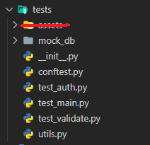
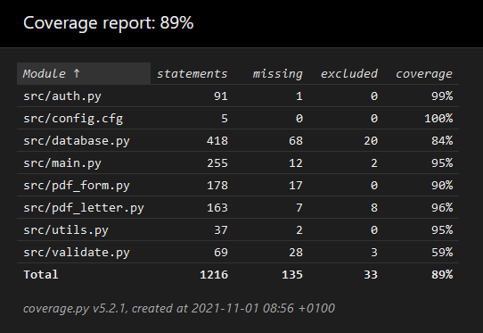

Testing & CI/CD*
* Continuous Integration/Continuous Deployment
- What to test (why do we test?)
- How to write testable code
- How to test (tools, frameworks)
- What is CI/CD & how to implement
What to test
| Error | Prevention |
|---|---|
| Syntax error | Compiler/Interpreter |
| Memory error |
Don't use C / C++ (or use Valgrind, RAII patterns) |
| Type error | Type checker |
| Logical error | Unit tests, integration tests |
What are logical errors?
Math error
You misunderstand how something works
Every programmer will make mistakes in their career!
Unit tests
Tip: You can also put
assert in
your actual code to ensure invariants
Frontend - How to test
Testing UIs
UIs are hard to test
Common strategies include:
- Unit testing business logic
- Snapshot testing
- Component testing
- End-to-end testing (tests backend as well)
Frontend - What to test
Frontend
If you perform any business logic in the frontend, isolate it and unit test it
Limited, cannot test visual regressions
Frontend - How to test
Snapshot testing
- Serialize your UI (e.g., to HTML)
- Save it (this is the snapshot)
- After a change, make a new snapshot and compare
- Verify that only the things you wanted to change changed
Hard to automate, many false positives
Frontend - How to test
Component testing
Like unit tests, but for UIs
Use libraries to mount individual components with mock-data and test them in isolation
Hinges on you using a component framework
Frontend - How to test
Component testing
Example with Vue
Frontend - How to test
End-to-end testing
Also called integration testing
Simulate and test the application as a whole, at the user level
Seeks to prevent this problem:

Frontend - How to test
End-to-end testing
E2E frameworks often run an entire browser to simulate a user
Some include Cypress, Playwright, Selenium, Puppeteer
Cypress example:
Can be slow, requires you running/mocking your backend, but testing is very thorough
What to test
Backend
Backends often are easier/more useful to test
What to test
Backend
Your own website is not the only thing that can access the backend!
You cannot trust anything that you receive
When testing, try to break everything:
-
What happens if a parameter is
None/null? -
What happens if someone tries an authorized action
without necessary authorization? Expired authorization? - Is the supplied data valid? (e.g. a valid e-mail address)
- What happens if the same request is sent twice?
Testable code
Why is this code hard to test?
Answers:
- Non-determinism
- Side effects
Better:
Dependency Injection
Classes/functions receive what
they need instead of taking it
When running your code while testing,
you would always use the production database...
you would always use the production database...
Dependency Injection
Instead, pass it as a parameter:
When testing, you can now pass a fake / different
DbConnection
How to run tests
You could organize all the tests yourself...
Or use a test framework
 JavaScript
JavaScriptPytest Example

Add a folder called
tests
conftest.py contains test
configuration and fixtures
Fixtures are reusable pieces of test setup/teardown code
(general term, not Python specific)
(general term, not Python specific)
Pytest Example
Testing
DRY or not?
Fixtures are nice to avoid needless repetition of setup code
But don't go overboard - Easily readable/searchable test cases are the most important
Repetition in test cases is only natural.
Tolerate it more than you would in normal code
Tolerate it more than you would in normal code
Result
pytest -v --cov-report=html --cov-report=term-missing --cov=src
tests/

Continuous Integration
Instead of big releases every now and then,
integrate small changes into
the codebase continuously
A good set of tests gives you the confidence that your code does not
break anything
Workflow:
- Write code
- Push code
- Pull request
- Continuous Integration service automatically runs your tests
- Merge into master if all the tests succeed
How to integrate tests in your workflow
GitHub Actions is
GitHub's built-in Continuous Integration service.
You can use it like this:
You can use it like this:
-
Add a folder called
.githubat the root of your repository -
In
.githubcreate a folderworkflows -
In
workflowsadd a filerun_tests.yml(or any name you want) -
run_tests.ymlwill contain configuration for the GitHub actions, in YAML format:
Result
Deployment
At some point, you will want to put your website/app/program online
For websites, this means hosting them
Most often, in the Cloud (AWS, GCP, Azure)
Common hosting methods include:
- Virtual Private Server (VPS)
> You get a VM and install/run everything - Platform-as-a-Service (PaaS)
> You give your app's repository. It will be placed into a VM with a prebuilt image. - Functions-as-a-Service (FaaS)
> You give your app's functions. Cloud provider invokes them on request and manages scaling automatically.
Deployment
Quick note on hosting
We as LUDev have hosting options available
If you are at the point where you want to have your website online, come talk to us
We have an agreement with Netlify, but there are other options
We will reimburse any costs
We will reimburse any costs
Continuous Deployment
Not always possible
Important to have a reproducible build process and very good tests
For now, try to get at least one useful unit test working, and setting up GitHub Actions